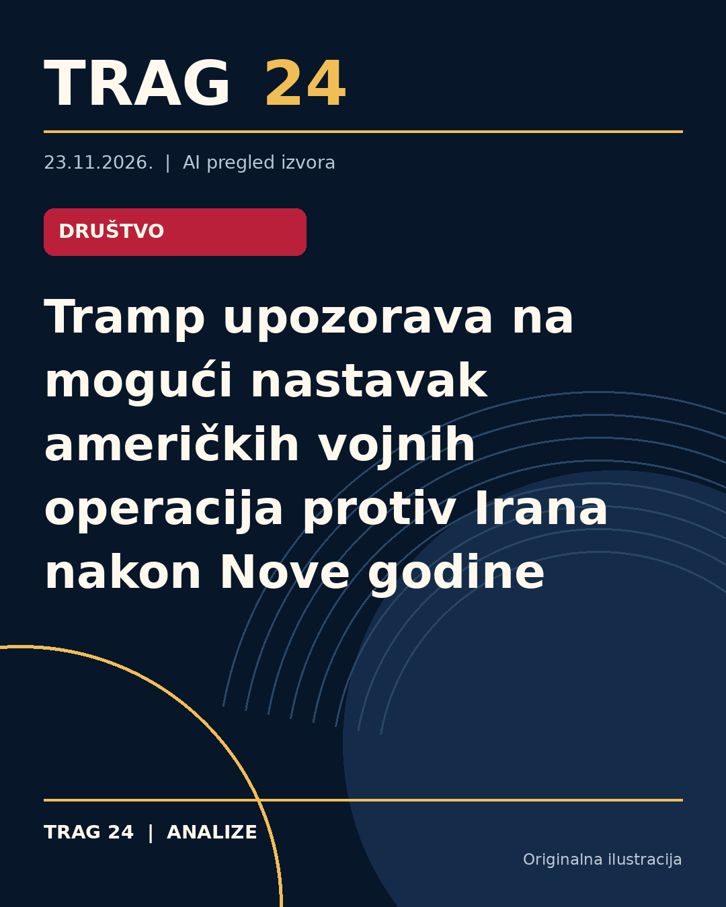

Tramp upozorava na mogući nastavak američkih vojnih operacija protiv Irana nakon Nove godine

ŠTA SE DOGODILO
Američki predsednik Donald Tramp izjavio je da bi Sjedinjene Američke Države mogle nastaviti vojne operacije protiv Irana nakon Nove godine ukoliko Vašington i Teheran ne postignu dogovor. On je kritikovao iranske pregovarače zbog odugovlačenja i izbegavanja konkretnih sporazuma, kao i ocenio da je Iran sada agresivniji nego pre američkih izbora. Takođe je upozorio da će američke snage potopiti iranske brodove ukoliko oni pokušaju da probiju američku pomorsku blokadu iranskih luka.
HRONOLOGIJA
Tramp je svoje izjave izneo u intervjuu za Fox News u trenutku kada su indirektni pregovori između SAD i Irana u toku, ali bez vidljivog napretka. On je naveo da su razgovori 'zaglavili u pregovorima i ograničenim napadima, bez okončanja sukoba'. Izjave su došle usled rastućih tenzija i sukoba između američkih i iranskih snaga u oblasti Ormuskog moreuza.
ŠTA NAVODE IZVORI
Izvor Insajder prenosi Trampove reči o mogućem nastavku vojne kampanje ukoliko se ne postigne sporazum, kao i njegovu kritiku prema iranskim pregovaračima koje opisuje kao vešte u izbegavanju odgovornosti. Naglašeno je da Tramp smatra da Iran pokazuje veću agresivnost nego ranije. Izvor Telegraf sličan tekst stavlja u fokus upozorenja američkog predsednika o pomorskoj blokadi i pretnjama iranskim brodovima.
ŠTA JE POTVRĐENO
Potvrđeno je da je Tramp u intervjuu na Fox News izjavio da bi SAD mogle nastaviti vojne operacije protiv Irana nakon Nove godine ako ne dođe do dogovora, kao i da su razgovori između dve strane trenutno zaglavljeni. Takođe, potvrđeno je da je Tramp upozorio da će američke snage reagovati na pokušaje iranskih brodova da probiju pomorsku blokadu.
ŠTA NIJE POTVRĐENO
Nije potvrđeno da je donesena konačna odluka o nastavku velikih vojnih operacija nakon Nove godine, niti postoje detalji o prirodi ili obimu eventualnih budućih akcija. Izvori ne daju podatke o tačnim uslovima pregovaračkog procesa ili preciznim zahtevima obe strane. Takođe, nema zvaničnih potvrda o trenutnim vojnim aktivnostima u Ormuskom moreuzu.
ŠTA OSTАJE OTVORENO: Ostaje nejasno hoće li i kada tačno biti postignut dogovor između SAD i Irana, kao i da li će doći do eskalacije vojnog sukoba. Takođe je nepoznato kako će izgledati dalji razvoj situacije na terenu i kakve će mere preduzeti obe strane u narednom periodu. Ostaje nepoznato i da li će diplomatski pregovori biti nastavljeni ili zamenjeni unilateralnim vojnim akcijama.
Izvori
- https://www.telegraf.rs/vesti/svet/4437760-tramp-sad-bi-mogle-da-nastave-velike-vojne-operacije-protiv-irana-posle-nove-godine
- https://insajder.net/prenosimo/tramp-sad-bi-mogle-da-nastave-velike-vojne-operacije-protiv-irana-posle-nove-godine
Ova analiza je pripremljena uz pomoć veštačke inteligencije na osnovu javno dostupnih izvora. Navodi izvora nisu nužno nezavisno potvrđeni.